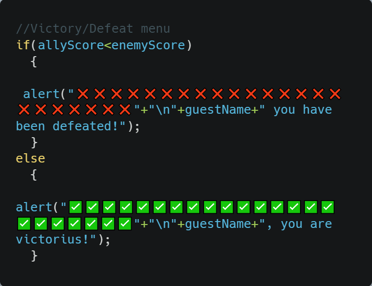

Here is a simple section of code from the end of the game. This code checks if the player score is less then the opponents. If yes, the player is alerted a lost. However, the else statement checks if the player won and then alerts a victory. We used this code since it helps conclude the game and announces a winner

else ifs
Here in this image an else if statement is used. This was used to alert the user if they selected scissors and the opponent selected scissors (rockPaperScissor==3). Furthermore, if this was executed the round count will be subtracted by one since it was a tie. Also, the rockPaperScissor value will be set back to 0 for the next round. Else ifs were very useful since they helped us list the possibilities of scissor+rock and scissor+paper etc...
Logical operators
For this image the logical operator =! and && was used. This was used to see if the users answer was either rock paper or scissors. If it wasn't rock paper scissors or any of the variations, the user will be given an alert saying that their input was invalid. The code will also restart the round by subtracting a round (x--). Logical operators like && and || helped us a lot. This is because it added different variants of strings the user can execute. For example, the user is no longer just limited to just saying "paper" in the prompt. They can also say "PAPER" or "p".
for loops
Unfortunately, we were not able to fit the entire for loop in this image. This for loop was designed to take the number of rounds the user wanted and add upon it. This would go on until the user finishes the last round. That is when the for loop ends. This for loop made it incredibly easy for us to calculate each round in classic and insane diffculties thus, why we used it.
while loops
With the use of while loop, this code loops when the value "rounds" is equal to 0. This happens in classic mode when the user is given a prompt asking for the number of rock paper scissor rounds. If the user gives an odd number the code doesn't loop and proceeds as normal. However, if they give an even number the user is alerted to put an odd number. Then, the rounds variable is returned back to 0. These while loops were very useful since it fundamentally prevented the user from using a even number. If the round was even, some games could end in a draw, and thats lame!
do while loops
This is similar to the while loop above. The only difference is that this round count is for insane mode rather then classic. This was done simply to prove our knowledge in do while loops.
Shortcut operators
In the first line of code an else if statement is used. If the user had chose rock and the opponent chose scissor, the code will alert a win. Not only that, it will execute shortcut operator that is designed to add 1 point to the users score. This is through the use of the shortcut operator ++. Using this operator made it easy for us to add points instead of doing allyScore=+1.
Random Numbers
This single line of code is practically the basis of our game. This line of code randomizes a number from 1-3. If the number is 1, the opponent/code will use rock. If the number is 2, the code will use paper. If the number is 3, then the code will use scissors. This line of code was used many times since it can easily represented with either rock, paper, or scissors.
Math Operations
This code (which is the exact same on from the do while statement) uses a modulo math operator. This code basically asks the user to input a number. If that number is even, then the user will be alerted, and the code will be looped all over again. The way we check that if its even is through the modulo operator. This operator checks if there is a remainder in the variable "rounds". If rounds%2 does equal to 0, then the alert message is played and the program is looped. However, if rounds%2 equals to 1, then its odd and the program will continue as usual. In a case like this, the math operator had assisted us by preventing ties with the even number.
.png)
.png)
.png)
.png)
.png)
.png)
.png)
.png)